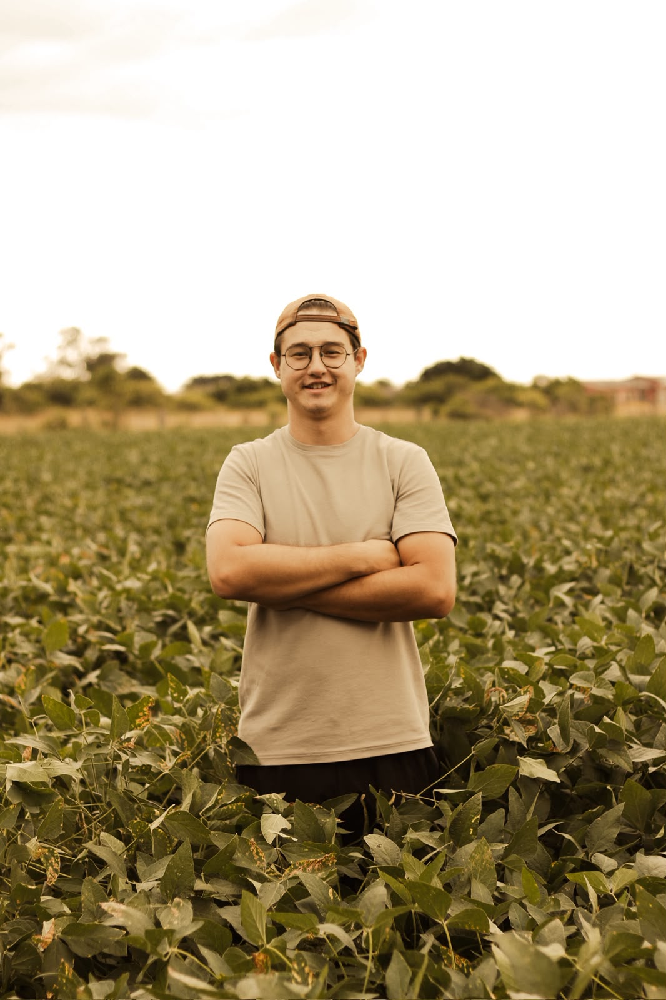

Farming Solutions
Tecnologia Agrícola Julho de 2026 — Atual- Manutenção de drones DJI
- Organização de processos
- Compras de peças e estoque
Profissional com experiência em logística, operações e tecnologia, atuando na área de tecnologia agrícola. Tenho conhecimento prático com drones agrícolas, manutenção de equipamentos e organização de processos.

Minha trajetória profissional começou na área de logística e e-commerce, onde desenvolvi experiência com organização de processos, controle de estoque, sistemas e rotinas operacionais.
Atualmente atuo na área de tecnologia agrícola, trabalhando com preparação, organização e manutenção de drones e seus equipamentos.
Meu objetivo é continuar evoluindo na área, unindo tecnologia, processos e experiência prática para contribuir com soluções cada vez mais eficientes.
Se você tem alguma oportunidade, projeto ou ideia, seria um prazer conversar.